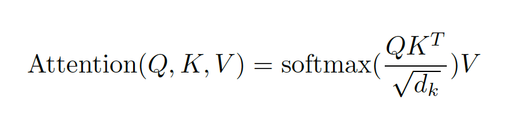
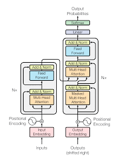

Introduction
This paper presents a different approach to sequence-to-sequence modelling, by introducing a new model which uses multi head attention mechanism -Transformer. The model uses encoder and decoder structure containing feed forward network, which can access information from whole sequence, from all past encoders and decoders. It is the different from previous models that relied on convolution or RNN for input output representation.
Transformer Architecture
The transformer uses 6 stacked self-attention layers of encoder and decoder. There are 6 encoders and decoders. The attention functions maps queries with all keys and apply SoftMax function to obtain weights on values parallelly. And along with the sublayers, each layer contains a feed forward network.

The model is trained on WMT 2014 English – German dataset consisting of 4.5 million sentences pairs and English - French dataset with 36 million sentence pair. It took 100,000 steps or 12 hours to train the base model and 3.5 days to train big model on 8 NVIDIA P100 GPUs.

Strong Points
The paper presents an entirely new approach without using recurrent or convolution method and give a detailed outline of the model to be used in future research. And the model performance is incredible, outperforming the previous models on two language pairs in WMT 2014 translation tasks.
Weak Points
Though the paper presents many possibilities for attention mechanism for implementation in future, but the model uses many hypermeters which increases the time it takes to train. So, if we need to train it using huge corpus of data, a lot of our experiments time will go in training the model.